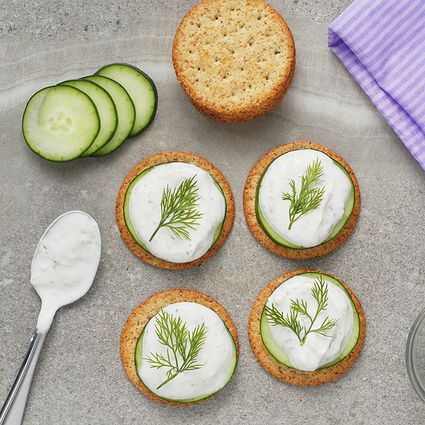

Cucumber Crackers
Nutritional Facts (per serving)
Calories 184 | Total Fat 15g | Saturated Fat 4g | Carbohydrates 9g | Fibre 1g | Protein 6g
Serves: 2
Ingredients
- 8 slices cucumber
- 1.4 oz cheddar cheese - sliced
- 8 stuffed green olives - halved
- 4 sundried tomatoes
- hummus
- tomato
- sprouts
- flaked almonds
Method
Step 1: Use the cucumber slices as a base and layer the cheese and olives on some of them.
Step 2: Layer the cheese, hummus and sundried tomatoes on the others. Use whatever you have on hand.
Step 3: Enjoy!